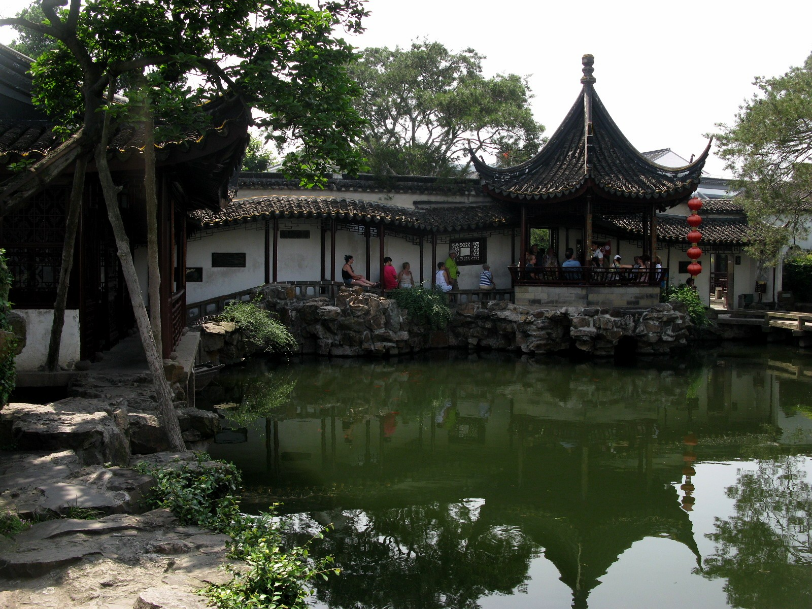
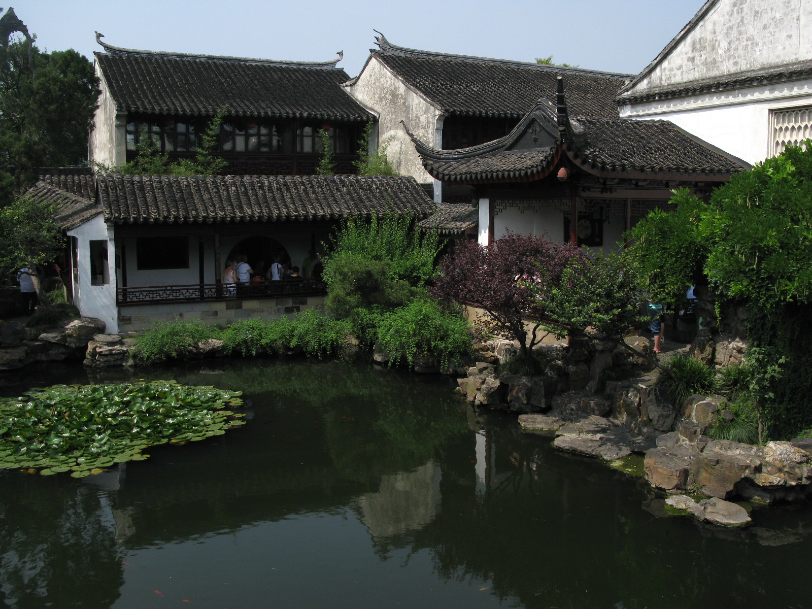
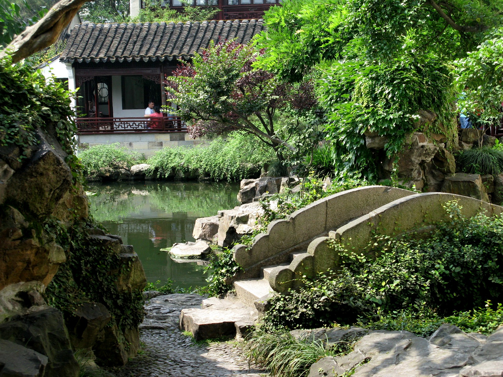
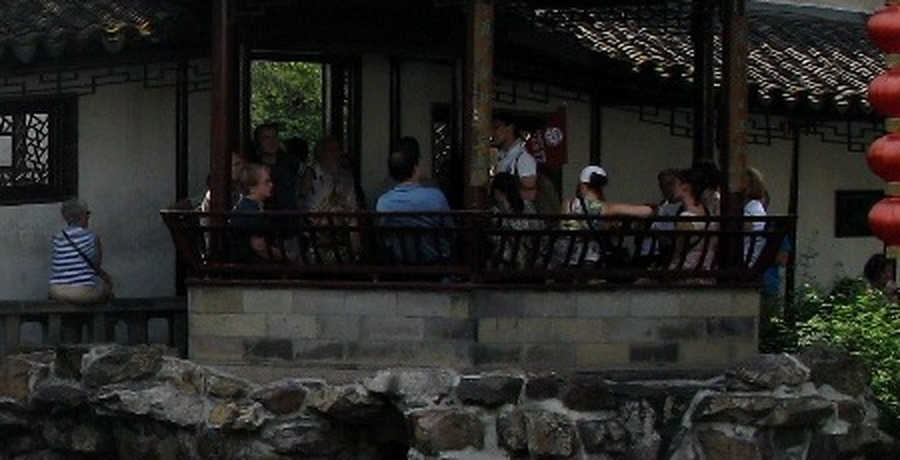
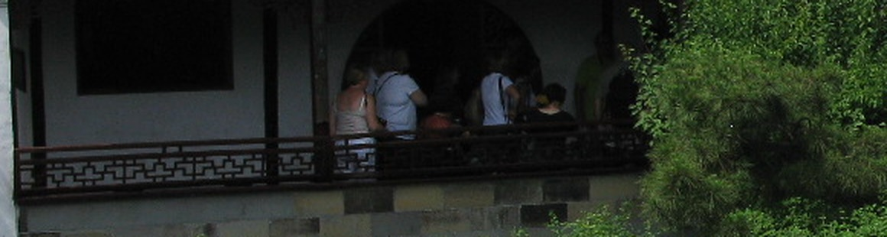
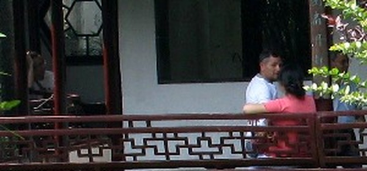

2026-11-07 · 只看网师园的亭、轩、榭、廊 · 本轮不改代码
下面三张都是实拍。图片来自 Wikimedia Commons，作者 Caitriana Nicholson，CC BY-SA 2.0。



三张局部放大图都是原图裁切，不是自绘示意图。



| 事项 | 看到的样子 | 可信度 |
|---|---|---|
| 坐面高度 | 约 0.42–0.45 m，和成人膝高相当 | 照片判断 + 通行做法，非实测 |
| 坐面进深 | 约 0.35–0.45 m | 通行做法，非实测 |
| 靠背形态 | 框架 + 格条芯；上枋／中枋／下枋 + 边梃，顶枋兼扶手；边梃做鹅颈形，整体向外倾 | 园林局文字 + 照片；边梃细节来自木作资料，不是网师园测绘 |
| 后仰角度 | 资料只写“向外倾斜而微微弯曲”；木作常见 10–15° | 有文字描述，无实测角度 |
| 下部 | 月到风来亭：水磨砖矮墙 + 木坐板；竹外一枝轩／濯缨水阁：木坐槛压在石／砖基上；照片里没有悬空雕花牙板 | 照片 + 资料 |
| 与柱交接 | 边框两端底部开浅榫与坐板结合；两端箍头用铜／铁搭钩系柱 | 苏州市园林局原文 |
| 转角 | 按开间分段，端头止于柱；亭子转角由角柱断开，不做整圈连续弯木；顶枋是否绕柱做弯头，照片看不清 | 照片 + 推断，需现场复核 |
现有坐槛在 buildings-corridor.js 的 body() 里（第 49–56 行）：下枋 + 直棂 + 上枋，上枋顶面约高出廊地面 0.47 m。
| 本项目廊子 | 网师园美人靠 | |
|---|---|---|
| 总高 | 约 0.47 m（只有坐面） | 约 0.85–0.9 m（坐面 + 靠背） |
| 靠背 | 没有 | 外倾格条，顶枋兼扶手 |
| 格芯 | 直棂 | 万字／竖棂 |
| 下部 | 直棂 + 上下枋，直接坐在台明上 | 坐板 + 水磨砖矮墙，或木坐槛 |
| 柱交接 | 通长到柱边 | 端头抱柱 + 铁钩 |
| 用法 | 可坐、可挡 | 可坐、可倚 |
差别不在“有没有栏杆”，而在靠背：现有廊子做到坐面就停了，人只能坐、不能靠。
保留现在的坐槛，只在上面加一段外倾的万字靠背。
适合：直廊、长廊的临水／临园一侧。
不要照搬：白墙、石基座。
坐面下做砖石矮墙，上面铺木坐板，再加格条靠背。
适合：临水亭、水榭、池岸节点。
不要照搬：轻巧直廊别做砖墙，会显得重。
按开间分段，角柱收头，万字格，不做整圈弯木。
适合：亭子周边、转角、L 形连接处。
注意：半山亭尺寸来自百科，未实测。